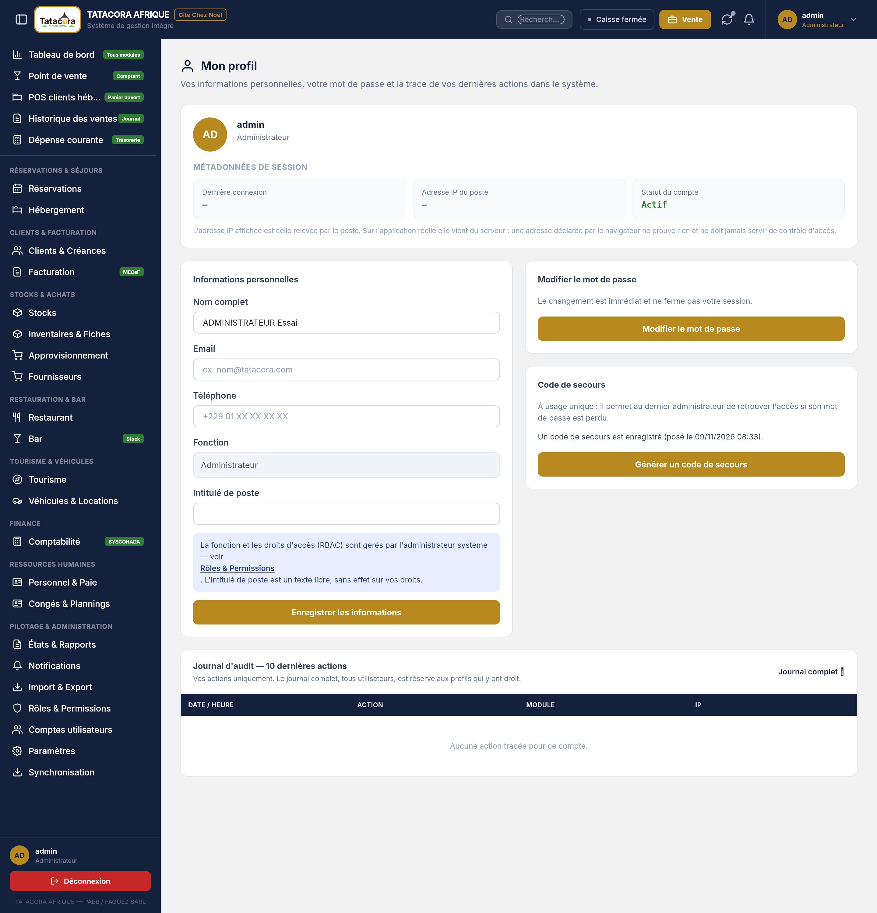
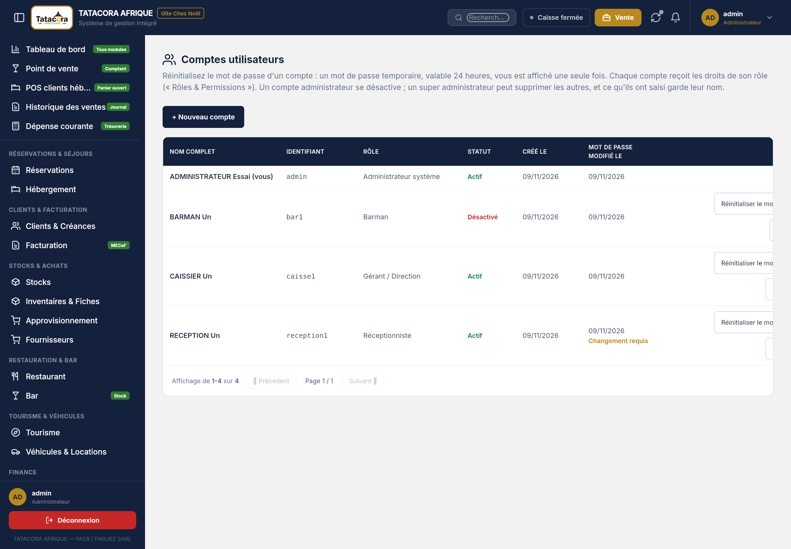
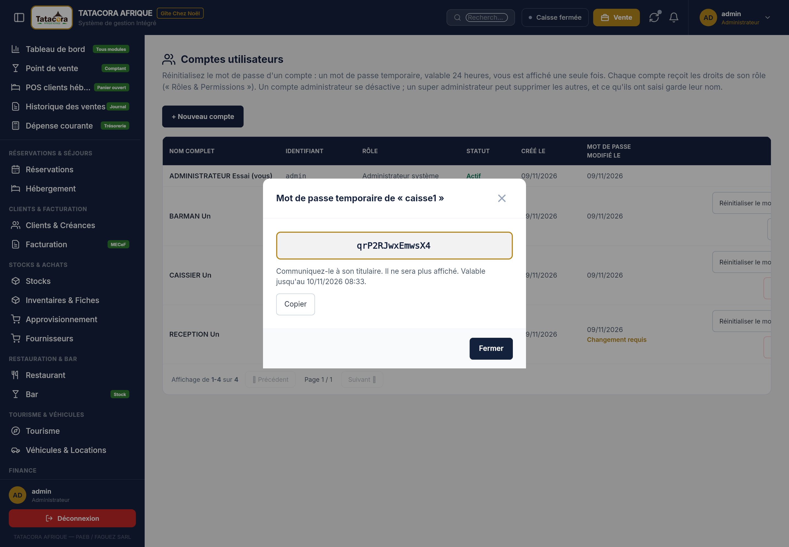
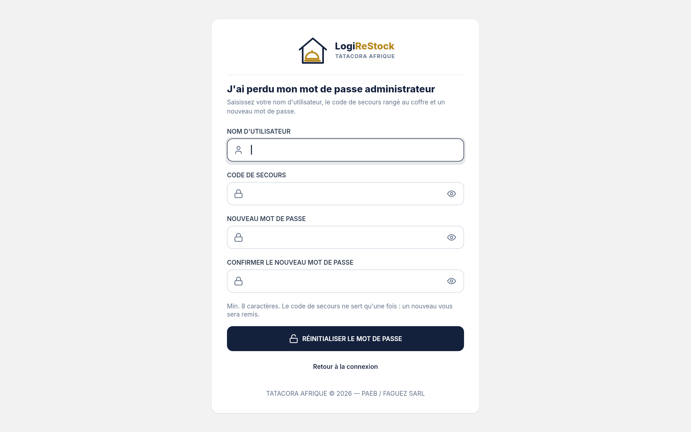

Chaque personne qui travaille dans LogiRestock a un compte nominatif. Ce chapitre explique comment créer un compte,
corriger son profil, retrouver l'accès quand un mot de passe est perdu — sans courriel —, désactiver ou supprimer un compte,
et comment le journal d'audit garde la trace de ces gestes.
19.1 Les principes à connaître
Un compte, une personne. L'identifiant est nominatif : toutes vos saisies portent votre nom. Ne prêtez jamais votre compte (chapitre 2).
Les comptes du poste et ceux du web sont distincts. Un mot de passe, ou un dérivé de mot de passe, ne voyage jamais d'un poste au serveur ni de l'un à l'autre. Un compte créé au poste n'existe pas au web, et inversement. Seule exception : la suppression d'un compte (section 19.7).
Aucun mot de passe par défaut. Un poste neuf fait créer le compte administrateur (chapitre 15, section 15.3).
Aucun mot de passe n'est stocké tel quel : seule une empreinte irréversible l'est. C'est pourquoi un mot de passe perdu ne se « retrouve » jamais ; il se remplace.
Pas de « mot de passe oublié » automatique par courriel. Le lien de l'écran de connexion dit « Contactez l'administrateur » : c'est lui, ou un code de secours, qui vous dépanne (sections 19.5 et 19.6).
19.2 Qui fait quoi
Geste
Qui peut le faire
Créer un compte, désactiver / réactiver, réinitialiser un mot de passe
Les administrateurs (rôles « administrateur » et « super administrateur »).
Supprimer un compte
Le super administrateur seulement (section 19.7).
Changer son propre mot de passe, modifier son profil
Chaque utilisateur, pour son propre compte (section 19.3).
Générer un code de secours
Les administrateurs, pour leur propre compte (section 19.6).
19.3 Mon profil
Chemin
Avatar (en haut à droite) ➔ Mon profil
Mon profil regroupe vos métadonnées de session (dernière connexion, statut du compte), vos
informations personnelles, le changement de mot de passe et vos 10 dernières actions au journal d'audit.
Les informations personnelles se modifient sous droit :
Champ
Qui peut le modifier
Règle
Nom complet
Tous les rôles
120 caractères au plus, sans caractère de contrôle. Si le compte est rattaché à une fiche employé, le nom vient de la fiche ; sinon l'écran dit « Aucune fiche employé n'est rattachée à ce compte ».
Emailfacultatif
Tous les rôles
Adresse valide ou vide. Elle sert aux notifications par courriel qui vous concernent (par exemple « bulletin disponible » pour un salarié). Sans adresse, aucun courriel ne part et aucune erreur n'apparaît.
Téléphone
Tous les rôles
Chiffres, « + », espaces et tirets, 30 caractères au plus.
Intitulé de poste
Les rôles d'administration
Texte libre de 120 caractères au plus, sans effet sur vos droits.
Fonction
Personne ici
En lecture seule : c'est le rôle (ou la fiche RH) ; il se gère dans Rôles & Permissions.
Modifiez les champs accessibles.
Cliquez sur Enregistrer les informations : « Informations enregistrées. » Si rien n'a changé : « Aucune modification à enregistrer. »
ℹ️Information
Un champ que votre rôle ne peut pas modifier est grisé et l'écran dit : « Votre rôle ne permet pas de modifier ce champ — demandez à
l'administrateur (Rôles & Permissions). » Même une demande forgée est refusée. Chaque modification est tracée au journal d'audit
(« Profil modifié », avec l'ancienne et la nouvelle valeur).
Changer son mot de passe
Dans le bloc Modifier le mot de passe, cliquez sur Modifier le mot de passe, saisissez l'Ancien mot de
passe, le Nouveau mot de passe (8 caractères au minimum) et sa confirmation, puis Mettre à jour le
mot de passe. Le changement est immédiat et ne ferme pas votre session. Refus possibles : « L'ancien mot de passe est incorrect. », « Le
nouveau mot de passe est identique à l'ancien. », « Le nouveau mot de passe et sa confirmation ne correspondent pas. »

Figure 19.1 — L'écran Mon profil du poste. Rendu de l’écran du poste ; compte fictif, « Dernière connexion » et « Adresse IP » sont vides dans ce rendu.
19.4 Créer et gérer les comptes
Chemin
Menu latéral ➔ Pilotage & administration ➔ Comptes utilisateurs
L'écran Comptes utilisateurs liste les comptes du poste : Nom complet, Identifiant, Rôle,
Statut (Actif / Désactivé), Créé le, Mot de passe modifié le, et les Actions. Votre propre ligne porte la mention « (vous) ».
Créer un compte
Cliquez sur + Nouveau compte.
Remplissez Nom complet, Identifiant (minuscules sans accent, chiffres, point, tiret ou souligné, de 3 à 50 caractères ; il sert à la connexion et ne se modifie plus ensuite), Email (facultatif), Rôle, Mot de passe et sa confirmation.
Cliquez sur Créer le compte et transmettez à la personne son identifiant et son mot de passe.
Chaque compte reçoit les droits de son rôle, réglés dans Rôles & Permissions (chapitre 13) : « Comptable » pour le comptable,
« Gérant / Direction » pour le gérant, etc. L'écran le rappelle : un compte administrateur se désactive ; un super administrateur peut supprimer
les autres, et ce qu'ils ont saisi garde leur nom.

Figure 19.2 — La liste des comptes du poste. Rendu de l’écran du poste ; la colonne des boutons est coupée à droite à cette largeur.
Désactiver, réactiver
Désactiver empêche le compte de se connecter. Il reste en base avec tout ce qu'il a saisi (traçabilité) et peut être
réactivé à tout moment. C'est le geste à utiliser pour une personne qui part, ou pour un compte administrateur.
19.5 Mot de passe perdu : la réinitialisation par un administrateur
Quand un employé perd son mot de passe, un administrateur lui en donne un temporaire. Il n'y a pas d'envoi de
courriel : le mot de passe temporaire est affiché une seule fois à l'administrateur, qui le transmet de vive voix ou par écrit.
Côté administrateur
Ouvrez Comptes utilisateurs et cliquez sur Réinitialiser le mot de passe sur la ligne du compte.
La fenêtre explique : « Un mot de passe temporaire va être généré. Il sera valable 24 heures et n'ouvrira que l'écran de choix d'un nouveau mot de passe. Les sessions ouvertes de ce compte seront fermées. » Cliquez sur Générer le mot de passe temporaire.
La fenêtre Mot de passe temporaire de « … » montre le mot de passe (14 caractères, sans les caractères ambigus comme 0, O, 1, l, I) avec un bouton Copier. Il ne sera plus affiché : « Communiquez-le à son titulaire. Valable jusqu'au … ».
Communiquez-le à son titulaire, puis cliquez sur Fermer.

Figure 19.3 — Le mot de passe temporaire, affiché une seule fois. Rendu de l’écran du poste ; compte fictif, mot de passe jetable sans valeur.
Côté employé
À l'écran de connexion, saisissez votre identifiant et le mot de passe temporaire.
Un écran « Définissez votre nouveau mot de passe » s'ouvre — et aucun autre écran n'est accessible : « Votre mot de passe a été réinitialisé par un administrateur. Choisissez maintenant un mot de passe que vous seul connaissez. »
Saisissez le nouveau mot de passe et sa confirmation, puis Enregistrer. Règle : 8 caractères au minimum, différent du mot de passe temporaire et de l'ancien.
Le logiciel confirme « Mot de passe défini. Connectez-vous avec votre nouveau mot de passe. » : connectez-vous avec le nouveau.
Ce que l'on voit
Sens
Statut Changement requis dans la liste des comptes
Le temporaire a été généré et n'a pas encore été remplacé.
Statut Temporaire expiré
Les 24 heures sont passées : « Ce mot de passe temporaire a expiré. Demandez-en un nouveau à l'administrateur. » L'administrateur recommence la réinitialisation.
Ce que le logiciel refuse
Un administrateur ne réinitialise pas son propre mot de passe par ce chemin : « Utilisez « Mon profil » avec votre ancien mot de passe. »
Un simple administrateur ne réinitialise pas un super administrateur : « Seul un super administrateur peut réinitialiser le mot de passe d'un super administrateur. » (Il lirait le temporaire et se connecterait avant lui.)
Un compte inconnu : « Ce compte est introuvable. » ; un geste réservé : « Ce geste est réservé à l'Administrateur. »
⚠️Attention
Après la réinitialisation, les sessions ouvertes du compte sont fermées et son ancien mot de passe ne fonctionne plus. Transmettez le
temporaire de façon discrète, et assurez-vous que la personne le change tout de suite. Ne le notez pas dans un message de groupe.
19.6 L'administrateur perd son propre mot de passe : le code de secours
Si c'est le dernier administrateur qui perd son mot de passe, personne ne peut le réinitialiser. Pour ce cas,
chaque administrateur dispose d'un code de secours : 25 caractères en cinq groupes (XXXXX-XXXXX-…), à usage unique,
que le logiciel ne stocke jamais en clair.
Le poser et le ranger
Au premier démarrage d'un poste, une fenêtre affiche le code du premier administrateur avec Copier, Imprimer et J'ai rangé ce code.
Plus tard, dans Mon profil ➔ Code de secours : le bloc indique « Un code de secours est enregistré (posé le …) » ou « Aucun code de secours n'est enregistré ». Générer un code de secours demande votre mot de passe actuel (Mot de passe actuel), puis Générer le code : « Votre code de secours — ce code ne sera plus affiché. Notez-le ou imprimez-le et rangez-le au coffre. » Le code précédent ne fonctionne alors plus.
Les comptes créés avant cette fonction n'ont pas de code : l'administrateur en génère un.
L'utiliser
Chemin
Écran de connexion ➔ J'ai perdu mon mot de passe administrateur
Remplissez les quatre champs : votre Nom d'utilisateur, le Code de secours rangé au coffre, le Nouveau mot de passe (8 caractères au minimum) et Confirmer le nouveau mot de passe (la même saisie, sans quoi l'écran refuse).
Cliquez sur Réinitialiser le mot de passe : « Mot de passe réinitialisé. »
Le logiciel affiche aussitôt « Votre nouveau code de secours » : le code utilisé est consommé, un nouveau vous est remis, une seule fois. Rangez-le comme le premier.

Figure 19.4 — L'écran du code de secours et ses quatre champs : nom d'utilisateur, code de secours, nouveau mot de passe, confirmation. Rendu de l’écran du poste, champs vides.🛑Alerte : cinq essais, puis quinze minutes
Après 5 essais ratés, l'écran dit « Trop de tentatives. Réessayez dans … minute(s). » et se ferme pendant 15 minutes.
Le refus est toujours le même — « Nom d'utilisateur ou code de secours incorrect. » — que le compte existe ou non, qu'il soit
administrateur ou non : un curieux ne peut pas deviner quels comptes existent. Le code ne se récupère pas : sans code et sans autre
administrateur, le compte est perdu. Conservez-le au coffre.
19.7 Supprimer un compte
Supprimer est plus fort que Désactiver, et réservé. La suppression est logique : le compte ne peut plus jamais
se connecter, mais rien de ce qu'il a saisi ne disparaît et chaque saisie continue d'afficher son auteur, sous la forme
« identifiant (compte supprimé) ».
Règle
Message du logiciel si elle n'est pas respectée
Seul un super administrateur supprime.
« Seul un super administrateur peut supprimer un compte. »
Jamais soi-même.
« Vous ne pouvez pas supprimer votre propre compte. »
Jamais un administrateur (ni un super administrateur).
« Un compte administrateur ne se supprime pas : désactivez-le. »
Dans Comptes utilisateurs, cliquez sur Supprimer sur la ligne du compte (le bouton n'apparaît que si vous en avez le droit et si le compte est supprimable).
La fenêtre demande : « Supprimer le compte « … » ? Il ne pourra plus se connecter. Ce qu'il a saisi garde son nom. » Cliquez sur Supprimer le compte.
Confirmation : « Le compte « … » est supprimé. »
La suppression se propage, par l'identifiant
C'est la seule chose sur les comptes qui se synchronise. Un compte supprimé sur le poste part au serveur ; un compte supprimé au web
descend vers les postes. Le rapprochement se fait par l'identifiant : un poste ne crée jamais de compte à partir de ce qu'il reçoit, et refuse
d'appliquer une suppression sur un homonyme administrateur. Pour qu'une suppression faite au poste soit acceptée par le serveur, le compte qui a
appairé le poste doit être super administrateur au serveur ; sinon la suppression reste valable sur le poste et apparaît dans À traiter
avec la cause « Droit manquant » (chapitre 16).
⚠️Attention
Il n'existe pas de liste des comptes supprimés à consulter : un compte supprimé disparaît de l'écran Comptes utilisateurs. Si une
personne revient, créez-lui un nouveau compte ; les saisies de l'ancien resteront à son nom d'origine, suivi de « (compte supprimé) ».
19.8 Le journal d'audit, et ce qu'on n'y trouve jamais
Chemin
Avatar ➔ Journal d'Audit
Le Journal d'Audit est en lecture seule pour tous, administrateurs compris (chapitre 13). Il garde, pour chaque action sensible, qui l'a faite,
quoi, sur quel élément, quand, et depuis quel poste (le nom de la machine). Les gestes sur les comptes y ont leur libellé :
Action
Libellé au journal
Un administrateur génère un temporaire
Réinitialisation du mot de passe
Un code de secours est posé, utilisé, refusé, ou le compte bloqué après 5 essais
Code de secours généré · Réinitialisation par code de secours · Code de secours refusé · Code de secours bloqué
Un compte est supprimé
Compte supprimé
Un profil est modifié
Profil modifié (ancien ➔ nouveau)
L'adresse du serveur est changée sur le poste
Adresse du serveur modifiée
ℹ️Information
Le journal ne contient jamais de mot de passe, de code de secours, ni même d'empreinte : seulement qui, quel compte, quand et
depuis quelle machine. Les gestes de sécurité du poste sont consignés sur le poste et ne partent pas dans la file de synchronisation.
19.9 Ce qui n'est pas encore éprouvé ou pas encore possible
La recette du mot de passe perdu sur un vrai poste reste à faire : réinitialiser un compte, se connecter avec le temporaire, puis perdre le mot de passe administrateur et le retrouver avec le code de secours, au web et sur le poste Windows, impression du code comprise.
La connexion par mot de passe du poste n'a pas de limite d'essais (le web limite à 5 par identifiant et par adresse) : un administrateur doit donc choisir des mots de passe solides et verrouiller le poste en son absence. La limite de 5 essais puis 15 minutes ne s'applique qu'au code de secours.
Un compte créé avant l'ajout de l'e-mail n'a d'adresse que si son titulaire la saisit dans Mon profil : un administrateur ne peut pas la saisir à sa place pour un compte déjà créé.